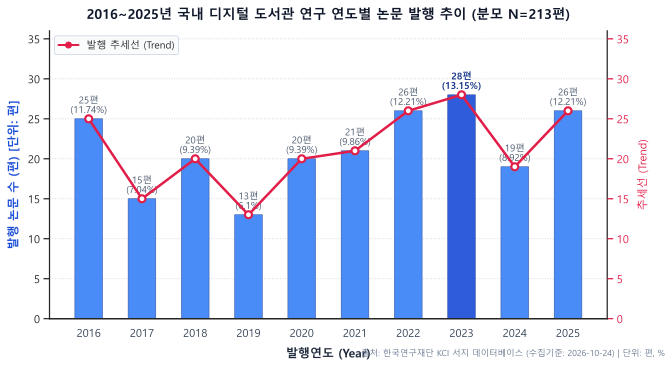
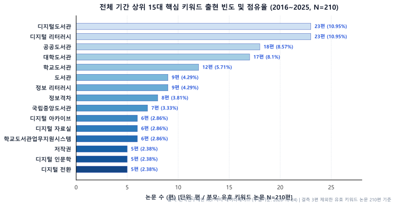
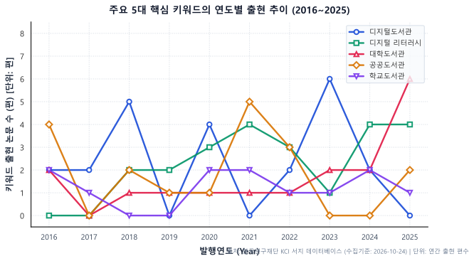
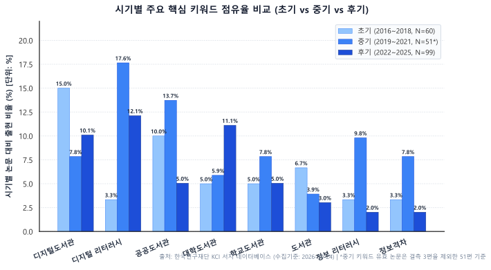
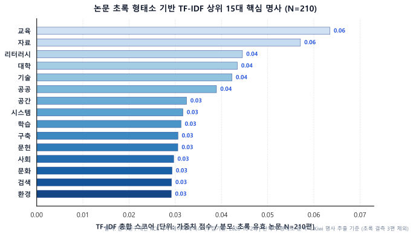
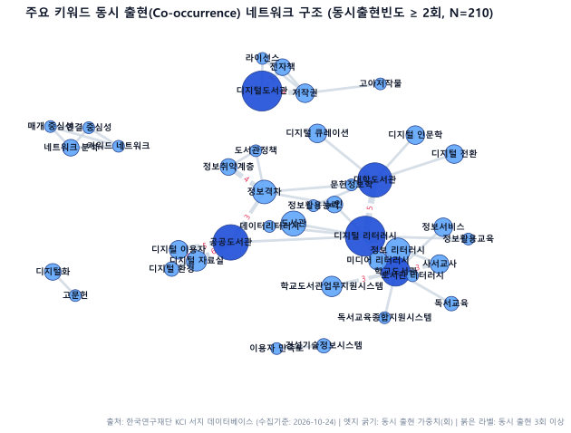
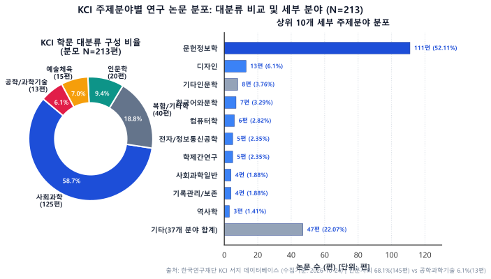
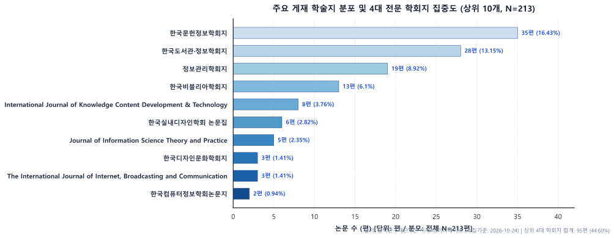
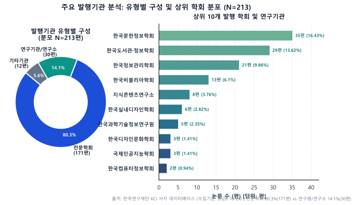

2016~2025년 국내 디지털 도서관 연구 동향 분석
부제: 핵심 키워드와 주제 변화
연구 배경 및 분석 목적
디지털 전환기 도서관의 패러다임 변화와 10개년 연구 흐름 조망의 필요성
지능정보사회와 도서관의 역할 변화
클라우드, 빅데이터, 인공지능(AI) 기술의 확산과 코로나19 팬데믹을 거치며 도서관은 '지능형 정보서비스 환경'으로 급변했습니다.
- 단순 장서 전산화에서 맞춤형 데이터 서비스로 진화
- 비대면 전자자원 열람 및 플랫폼 중심 지식 정보 제공 일상화
10개년 학술 연구의 실증적 전수 분석
지난 10년간 축적된 학술 연구를 객관적·계량적으로 종합하여, 학계의 관심사와 주요 실천 영역이 어디로 이동했는지 실증합니다.
- 한국연구재단 KCI 공인 서지 데이터 213편 전수 분석
- 시계열 키워드 추적, 다학제 융합 양상, 동시 출현 지식망 규명
연구 질문 (Research Questions)
국내 디지털 도서관 연구 생태계를 입체적으로 탐색하기 위한 6대 핵심 질문
발행 추이 (Publications)
연도별 발표 편수와 증감 구간, 시기별 집중도를 실증 파악합니다.
핵심 키워드 (Keywords)
논문 단위 출현 빈도(DF) 및 점유율을 기준으로 상위 핵심 연구 개념을 도출합니다.
시기별 변화 (Temporal Shifts)
초기(2016~18), 중기(2019~21), 후기(2022~25)의 패러다임 전환을 비교합니다.
학제·지식망·시사점
주제분야 분포(RQ4), 동시출현 구조(RQ5), 학술적·정책적 시사점(RQ6)을 도출합니다.
데이터 출처 및 수집 범위
한국학술지인용색인(KCI) 공인 메타데이터 기반 213편의 정밀 서지 레코드 구조
KCI 원본 서지 데이터 개요
- 공인 출처: 한국연구재단 한국학술지인용색인 (KCI)
- 검색 질의어: '디지털 도서관' (주제/제목/키워드 통합)
- 수집 기간: 2016년 ~ 2025년 (최근 10개년)
- 원시 데이터:
KCI_excel_2026432443058.xls
분석에 활용된 11개 필드 명세
| 열 이름 | 속성 | 분석 활용 및 의미 |
|---|---|---|
유형 | 문자 | 정규 학술지 게재 논문 확인 ('J') |
저자명 | 문자 | 연구자 및 공저 네트워크 파악 |
주저자 소속기관 | 문자 | 주도 기관 및 대학 분포 (1건 결측) |
논문명 | 문자 | 중복성 점검 및 연구 주제 식별 |
학술지명 | 문자 | 게재 학술지 분포 (90개 고유지) |
저자키워드 | 문자 | 핵심 연구 개념 및 동시출현 (3건 결측) |
초록 | 문자 | 한국어 형태소 분석 및 토픽 모델링 (3건 결측) |
발행기관명 | 문자 | 발행 학회 및 연구기관 현황 |
발행연도 | 정수 | 10개년 시계열 추이 (2016~2025) |
주제분야 | 문자 | KCI 분류 기준 다학제성 (47개 분야) |
반출일 | 문자 | 다운로드 메타데이터 (분석 배제) |
데이터 구성 및 분석 프로세스 로드맵
재현 가능한 Python 정량 계량서지학 및 한국어 형태소 텍스트 마이닝 파이프라인
데이터 감사 및 정제
원본 데이터 무결성을 검증하고 텍스트 표준화를 수행했습니다.
- 논문 제목 정규화 후 중복률 0.0% 검증
- 키워드 결측 3건 분모 분리 명기
- 942개 원시 키워드 표준화 규칙 수립
계량서지 및 지식망 분석
Pandas 및 NetworkX를 활용하여 다차원 통계와 지식 구조망을 모델링했습니다.
- 연도별 논문 수 및 증감률 통계 산출
- 논문 단위 키워드 출현 빈도(DF) 집계
- 동시 출현 빈도 기반 가중치 그래프 생성
초록 형태소 및 토픽 분석
고성능 한국어 분석기 Kiwi 및 머신러닝 모형을 적용했습니다.
- 일반명사(NNG)·고유명사(NNP) 추출
- 도서관학 연구 맞춤형 불용어 필터링
- TF-IDF 가중치 및 LDA 4대 토픽 모델링
데이터 품질 점검 결과 (Data Quality Audit)
데이터 품질 보고서(Data Quality Report) 핵심 지표 검증 결과 요약
| 검증 항목 | 검증 기준 | 실제 결과 | 데이터 신뢰도 평가 |
|---|---|---|---|
| 전체 레코드 수 | 헤더 제외 순수 데이터 행 | 213건 | KCI 다운로드 전량 100% 정상 확보 |
| 발행연도 범위 | 2016~2025년 포함 여부 | 213건 일치 | 범위 외 연도 및 이상치 0건 |
| 논문명 중복성 | 공백·부호 제거 후 제목 비교 | 중복 0건 (0%) | 213편 전건 상이한 고유 연구 |
| 키워드·초록 결측 | Null 또는 빈 문자열 점검 | 각 3건 결측 | 학술대회 초록 3편 (모수 210편 분리) |
| 주저자 소속 결측 | 소속기관 미입력 점검 | 1건 결측 | 영문 게재지 1건 ('미기재' 처리) |
데이터 무결성 검증 완료율: 100%
엄격한 모수(N) 분리 표기 원칙
통계적 왜곡을 원천 방지하기 위해 분석 단위별 정확한 모수를 엄격히 구분하여 적용했습니다.
- 전체 분석 모수 (N=213): 연도별 추이, KCI 주제분야, 학술지, 발행기관 분석
- 텍스트 분석 모수 (N=210): 저자키워드 빈도, 시기별 비교, 동시출현망, 초록 분석
연도별 논문 발행 추이 (2016~2025)
연구 질문 1 (RQ1) 분석 결과: 연평균 21.3편의 안정적 발표 및 후기(2022~2025) 집중 양상

연도별 발행 통계 및 시계열 특징
| 연도 | 편수 | 비율(%) | 시계열 특징 |
|---|---|---|---|
| 2016 | 25편 | 11.74% | 스마트 라이브러리 태동기 |
| 2017 | 15편 | 7.04% | 일시적 소강 국면 |
| 2018 | 20편 | 9.39% | 디지털 아카이브 연구 재개 |
| 2019 | 13편 | 6.10% | 중기 전환 직전 조정기 |
| 2020 | 20편 | 9.39% | 팬데믹 발발 및 비대면 전환 |
| 2021 | 21편 | 9.86% | 정보격차 해소 논의 확산 |
| 2022 | 26편 | 12.21% | 엔데믹 및 메타버스·AI 접목 |
| 2023 | 28편 | 13.15% | 10개년 역대 최다 기록 |
| 2024 | 19편 | 8.92% | AI 실무 적용 및 법제도 검토 |
| 2025 | 26편 | 12.21% | 스마트 도서관 고도화 |
전체 기간 상위 핵심 키워드
연구 질문 2 (RQ2) 분석 결과: '디지털 리터러시'와 '도서관 관종' 중심의 지식 구조

상위 15대 핵심 키워드 출현 순위 (N=210)
- 공동 1위 (23편, 10.95%):
디지털도서관,디지털 리터러시
→ 검색어 자체만큼이나 '이용자 리터러시 역량'이 최고 빈도를 차지함 - 도서관 관종별 핵심 분포:
•공공도서관: 18편 (8.57%, 3위 - 시민 공간 혁신)
•대학도서관: 17편 (8.10%, 4위 - AI 및 연구지원)
•학교도서관: 12편 (5.71%, 5위 - 독서교육 및 DLS)
•국립중앙도서관: 7편 (3.33%, 9위 - 국가 서지 아카이브) - 정보 격차 및 시스템군:
•정보 리터러시(9편),정보격차(8편),디지털 아카이브(6편)
키워드 정규화 체계 및 방법론적 유의점
표기 변형과 다국어 표현을 엄밀하게 통일하여 분석의 정확성과 재현성 확보
주요 정규화 매핑 사례 요약
| 원문 키워드 표기 | 정규화 표준 키워드 | 규칙 유형 |
|---|---|---|
| 디지털 도서관, Digital Library | 디지털도서관 | 영/한 통합 및 띄어쓰기 |
| 디지털리터러시, Digital Literacy | 디지털 리터러시 | 표준 띄어쓰기 및 영문 매핑 |
| 정보리터러시, Information Literacy | 정보 리터러시 | 표준 띄어쓰기 및 영문 매핑 |
| 디지털아카이브, Digital Archive | 디지털 아카이브 | 복수형 처리 및 띄어쓰기 |
| 디지털전환, Digital Transformation | 디지털 전환 | 용어 통일 |
| Public Library, Public library | 공공도서관 | 영문 명칭 국문 통합 |
| DLS, 디지털도서관시스템(DLS) | 학교도서관업무지원시스템 | 공식 법정 명칭 매핑 |
| AI, Artificial Intelligence | 인공지능 | 약어/영문 국문 통일 |
데이터 왜곡 방지를 위한 4대 수칙
- 1. 논문 단위 중복 제거: 한 논문 내 동일 키워드 반복은 1회로 간주(Document Frequency 기준 집계).
- 2. 자의적 개념 통합 배제: 의미가 다른 '도서관'과 '디지털도서관', '정보격차'와 '디지털 격차'를 분리 보존.
- 3. 규칙 전수 기록: 942개 원시 키워드의 매핑 결과를
keyword_normalization_rules.csv에 100% 공개. - 4. 원본 데이터 무결성: 원본 엑셀은 수정하지 않고 별도의
cleaned_data.csv로 분리 저장.
주요 5대 핵심 키워드의 연도별 추이
연구 질문 2 & 3: 디지털 리터러시의 급성장과 대학도서관의 후기 약진

5대 핵심 키워드의 생애주기적 특징
- 디지털 리터러시: 2016~2018년 연 0~1편 수준이었으나, 2019년 이후 연 3~5편으로 급증하여 후기까지 최대 주제로 정착.
- 대학도서관: 초기와 중기에는 완만한 추세를 보이다가 2022~2025년 후기에만 11편이 집중 발표되며 급격한 상승세 시현.
- 공공도서관: 2016년부터 2021년까지 매년 2~4편씩 고르게 나타났으며, 공간 혁신 및 시민 대상 정보서비스 연구 주도.
- 학교도서관: 독서교육 및 DLS 시스템을 중심으로 10개년 동안 꾸준히 발표되며 교육 현장의 디지털 접목 견인.
초기·중기·후기 시기별 연구 주제 비교
연구 질문 3 (RQ3) 분석 결과: 시스템 구축기 → 이용자 격차 완화기 → AI·대학 전환기

3개 시기별 패러다임 전환 (10개년 3단계)
| 구분 | 주요 키워드 | 연구 성격 및 초점 |
|---|---|---|
| 초기 (2016~18) N=60 (28.2%) |
디지털도서관(15.0%), 공공도서관(10.0%), 디지털 아카이브(5.0%) | 기초 시스템 아키텍처, 디지털 원문 보존, 공간 배치 |
| 중기 (2019~21) N=51* (23.9%) |
디지털 리터러시(17.7%), 공공도서관(13.7%), 정보격차(7.8%) | 팬데믹 비대면 서비스, 취약계층 정보격차 해소 |
| 후기 (2022~25) N=99 (46.5%) |
디지털 리터러시(12.1%), 대학도서관(11.1%), AI/디지털전환(3.0%) | AI 융합, 디지털 전환(DX), 대학도서관 혁신, 저작권 라이선스 |
논문 초록 기반 텍스트 마이닝 및 토픽 모델링
연구 질문 5 (RQ5) & 분석 C: Kiwi 형태소 분석기 기반 TF-IDF 및 LDA 4대 잠재 토픽

도출된 4대 핵심 잠재 토픽 (N=210)
- 토픽 1: 디지털 아카이브 및 공공 정보 보존·격차 해소
주요 단어: 아카이브, 공공, 격차, 보존, 건설, 장애인, 기술, 지역 - 토픽 2: 학교도서관 DLS 및 전자책·독서 교육 지원
주요 단어: 학교, 독서, 교육, 전자책, 이미지, 큐레이션, 교사, 학습 - 토픽 3: 도서관 공간 계획, 건축 및 디자인 요인
주요 단어: 공간, 도서, 분류, 자료, 계획, 공공, 요인, 디자인 - 토픽 4: 대학도서관 디지털/정보 리터러시 교육 및 운영
주요 단어: 리터러시, 대학, 교육, 문헌, 논문, 프로그램, 운영, 한국
키워드 동시 출현(Co-occurrence) 네트워크
연구 질문 5 (RQ5) 분석 결과: 지식 네트워크의 3대 핵심 군집과 연결 양상

지식망의 3대 핵심 서브클러스터 (N=210)
- 군집 1: 리터러시 및 이용자 역량 클러스터
•디지털 리터러시-정보 리터러시(7회, 전체 1위 최다 연결)
•디지털 리터러시-미디어 리터러시(5회)
•정보격차-정보취약계층(4회) - 군집 2: 도서관 관종 및 물리/디지털 공간 클러스터
•공공도서관-디지털 자료실(6회)
•대학도서관-디지털 리터러시(5회)
•학교도서관-학교도서관업무지원시스템(DLS)(3회) - 군집 3: 전자자원 저작권 및 라이선스 클러스터
•디지털도서관-저작권(4회)
•저작권-전자책-라이선스(각 2회)
KCI 주제분야별 연구 분포: 대분류 비교 및 세부 분야 (RQ4)
문헌정보학의 주도적 역할(52.1%)과 인문사회(68.1%) vs 공학기술(6.1%) 등 47개 세부 분야의 다학제적 확산

학문 대분류 구성 및 상위 분야 (N=213)
| 학문 대분류 / 주요 분야 | 편수 | 점유율(%) | 특징 |
|---|---|---|---|
| 사회과학 (문헌정보학 등) | 125편 | 58.69% | 문헌정보학(111편) 중심 |
| 복합학 / 기타학 | 40편 | 18.78% | 학제간연구(5편) 및 융합 |
| 인문학 (어문학, 사학 등) | 20편 | 9.39% | 디지털 아카이브 및 텍스트 |
| 예술체육 (실내/환경 디자인) | 15편 | 7.04% | 도서관 공간 및 인테리어 |
| 공학 / 과학기술 | 13편 | 6.10% | 컴퓨터학(6편), 정보통신(5편) |
| 인문사회계열 합계 | 145편 | 68.08% | 사회과학(125) + 인문학(20) |
주요 게재 학술지 및 발행기관 분석 (RQ4 & G)
상위 4대 문헌정보학 전문 학회지에 44.6% 집중 및 발행기관 유형별(학회 80.3% vs 연구원 14.1%) 구성


학술지 및 발행기관 집중도 요약 (N=213)
- 상위 4대 전문 학회지 집중:
•한국문헌정보학회지: 35편 (16.43%, 1위)
•한국도서관·정보학회지: 28편 (13.15%, 2위)
•정보관리학회지: 19편 (8.92%, 3위)
•한국비블리아학회지: 13편 (6.10%, 4위)
→ 4대 학회지 합계: 95편 (44.60%) - 발행기관 유형별 구성 (전체 213편):
•전문학회: 171편 (80.28%) |연구원/연구소: 30편 (14.08%) |기타: 12편 (5.63%)
주요 연구 발견 종합 (1): 발행 추이와 패러다임 전이
213편 전수 분석을 통해 확인된 핵심 발견 1 & 발견 2 (스크롤 없는 16:9 최적화)
후기 연구 집중 및 2023년 피크 달성
2016~2025년 총 213편 중 후기(2022~2025년)에 99편(46.5%)이 집중되었으며, 2023년은 28편(13.15%)으로 역대 최고치를 달성했습니다.
디지털 리터러시 중심성 및 역량 전이
디지털 리터러시(23편, 10.95%)가 디지털도서관과 공동 1위를 차지하여, 시스템 구축 중심에서 이용자 정보 역량 강화 중심으로 패러다임이 전면 이동했습니다.
주요 연구 발견 종합 (2): 대학도서관 부상과 다학제 지식망
213편 전수 분석을 통해 확인된 핵심 발견 3 & 발견 4·5 (스크롤 없는 16:9 최적화)
대학도서관과 인공지능(AI)의 급부상
후기 연구에서 대학도서관(11편, 11.11%), 인공지능(3편), 디지털 전환(3편), 전자책 라이선스가 두드러지게 증가하며 고등교육 스마트 도서관과 법제도 이슈가 대두되었습니다.
47개 학제 융합과 3대 지식 네트워크
문헌정보학(52.11%)을 중심으로 디자인·공학 등 47개 분과가 융합되었으며, 네트워크 분석 결과 ①리터러시 교육, ②관종별 공간 서비스, ③전자자원 저작권의 3대 핵심 군집이 확인되었습니다.
분석의 한계 및 후속 연구 과제 (RQ6)
연구의 엄밀성을 위한 데이터의 방법론적 제약과 향후 심층 연구 방향
본 계량서지 분석의 제한점
- 단일 검색어 한정: KCI에서 '디지털 도서관'으로 검색하여 '스마트 도서관', '전자도서관', '메타버스 도서관'으로만 색인된 연구는 누락되었을 가능성.
- 학술대회 요약본 결측: 학술대회 발표초록 3편의 키워드 미기재로 텍스트 모수가 210편으로 한정됨.
- 서지 메타데이터 의존: 초록과 키워드 수준의 분석으로 논문 본문의 연구 방법론과 가설 검증 모형을 직접 파악하지 못함.
- 인과관계 추론 한계: 외부 사회적 요인과의 직접적 인과성은 서지 데이터만으로 완벽한 입증에 한계.
향후 권장 연구 방향
- 1. 검색어 및 글로벌 DB 확장:
'스마트 도서관', '디지털 트랜스포메이션'으로 검색어를 확장하고 Web of Science, Scopus 등 글로벌 서지 DB와의 비교 분석. - 2. 논문 전문(Full-Text) 텍스트 마이닝:
논문 본문 PDF 전문을 파싱하여 연구 가설, 실증 분석 기법, 데이터셋 유형에 대한 심층적 내용 분석 수행. - 3. 피인용 네트워크(Citation Network) 분석:
논문 간 인용 관계망을 구축하여 지식의 전파 경로와 파급력이 높은 랜드마크 연구 규명.
결론 및 정책 발전 로드맵 (Conclusion)
연구 질문에 대한 종합적 해답과 국내 디지털 도서관 발전 방향의 시사점
이용자 역량 중심으로의 전이
2016~2025년 지난 10년간 국내 디지털 도서관 연구는 '시스템 구축'에서 '이용자 리터러시 역량 개발'로 확고히 진화했습니다. 정보 격차를 해소하고 모든 시민이 정보를 효과적으로 활용하도록 돕는 사회적 교육 기관으로서 도서관의 책무가 강화되었습니다.
관종별 현장 밀착형 지식 분화
공공도서관(시민 정보격차 완화), 대학도서관(AI·연구지원 디지털 전환), 학교도서관(독서교육·DLS 시스템) 등 각 관종별 특성에 최적화된 디지털 서비스 연구가 정밀하게 분화·발전해왔음이 데이터로 확인되었습니다.
기술 도입과 제도적 안전장치의 균형
후기 연구에서 부상한 인공지능(AI)과 전자자원 저작권·라이선스 논의는, 향후 도서관 현장이 첨단 기술을 도입함과 동시에 지적재산권과 디지털 저작물 라이선스에 대한 제도적 안전장치를 조화롭게 마련해야 함을 시사합니다.
참고자료 (References & Methodology)
본 분석에 직접 활용된 공인 서지 데이터, 학술 문헌 및 오픈소스 분석 환경 명세
실제 활용 데이터 및 참고 문헌
- 한국연구재단 KCI 서지 원시 데이터:
한국학술지인용색인 (Korea Citation Index). 검색어 '디지털 도서관', 발행연도 2016~2025년 추출 데이터 (213편 전수). https://www.kci.go.kr - 김판준, 이재윤 (2014).
한국 문헌정보학 분야의 연구동향 분석: 2003-2012년 학술지 논문을 중심으로. 한국비블리아학회지, 25(1), 311-338. - 이재윤 (2006).
지적 구조 분석을 위한 패싯 기반 계량서지적 네트워크 분석 기법. 정보관리학회지, 23(3), 397-418. - Blei, D. M., Ng, A. Y., & Jordan, M. I. (2003).
Latent Dirichlet Allocation. Journal of Machine Learning Research, 3, 993-1022.
재현 가능한 분석 및 시각화 오픈소스
- Python 3.13: 데이터 전처리 및 통계 분석 핵심 런타임
- Pandas 3.1.0 & NumPy 2.5.4: 다차원 서지 메타데이터 정제 및 수치 집계
- Kiwi (Kiwipiepy 0.24.1): 고성능 C++ 기반 한국어 형태소 분석기
- Scikit-Learn 1.9.1: TF-IDF 가중치 계산 및 LDA 잠재 토픽 모델링
- NetworkX 3.7: 키워드 동시 출현(Co-occurrence) 네트워크 모델링
- Seaborn 0.13.2 & Matplotlib 3.11.2: 300 DPI 고해상도 PNG 및 무손실 벡터 SVG 시각화 제작
- HTML5 / CSS3 / Vanilla JavaScript: 외부 의존성 없는 16:9 순수 로컬 프레젠테이션